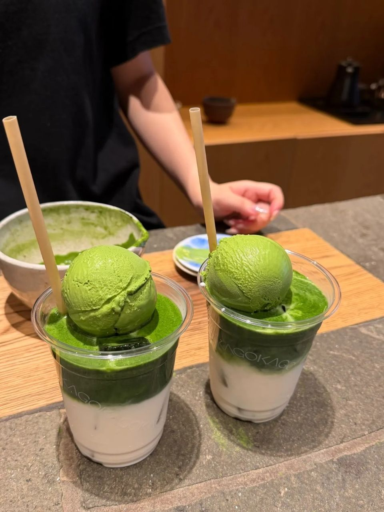
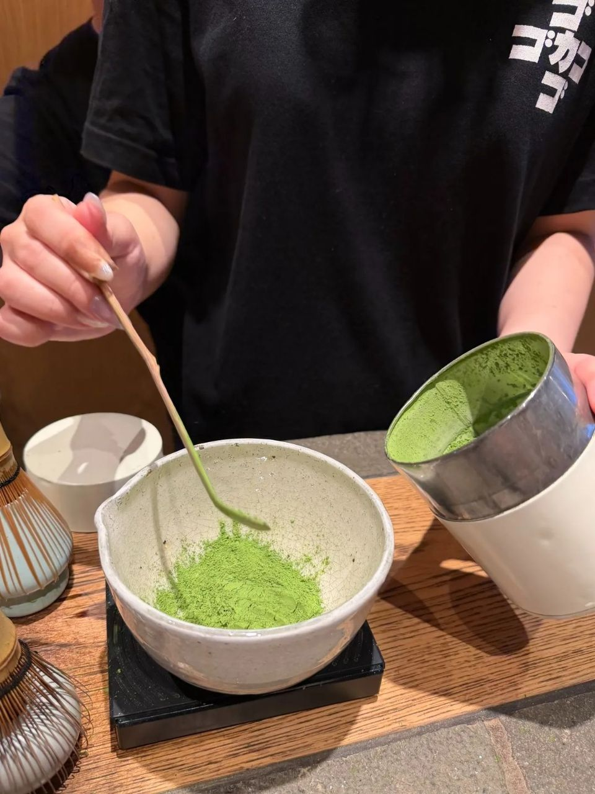
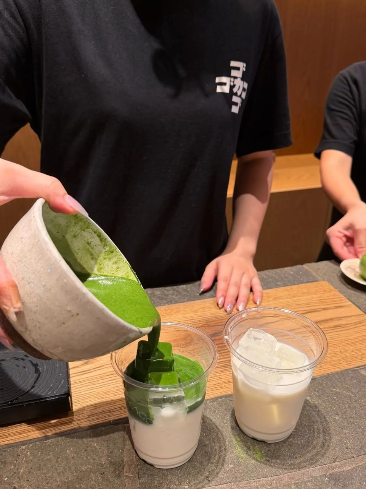
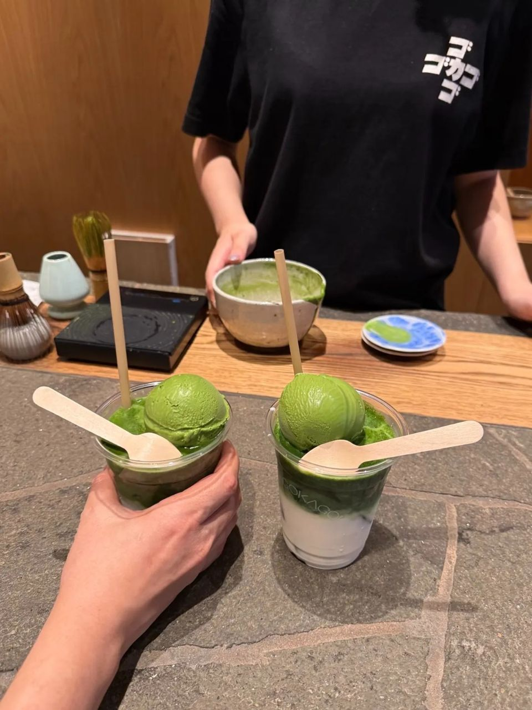

교토 기요미즈자카 GOKAGO, 눈앞에서 한 잔씩 만드는 진한 말차 후기
번호 부르면 그때부터 체에 치고 차선으로 저어 한 잔씩! 웨이팅이 있어서 오픈 시간 맞춰 가는 걸 추천해요.
진한 말차 좋아하시면
교토 가서 꼭 들러야 할 곳이 있어요 🍵
번호를 부르면 그때부터
한 잔씩 손으로 만들어 주는
기요미즈자카 GOKAGO, 지금부터 풀어볼게요!

1. 기요미즈데라 가는 길, 기요미즈자카에 있어요!
- 위치: 일본 교토 기요미즈자카 (기요미즈데라 참배길) (아래 '가게 정보'에서 지도 보기)
- 영업: 오전 10:30부터 (닫는 시간은 공식 안내가 없어요)

2. 번호 부르면 그때부터 만들어 줘요
말차를 체에 치고, 차선으로 저어서
한 잔씩 손으로 만들어 줘요.
만드는 과정을 바로 앞에서 다 보여줘서 좋았어요.
기다리는 동안 카메라만 켜 두세요 ㅎㅎ

3. 웨이팅은 각오하세요!
한 잔씩 만들다 보니 웨이팅이 좀 있어요.
(20~40분 기다렸다는 후기도 있더라구요)
그래서 오픈 시간 맞춰 가는 걸 추천해요!

4. 총평
- 추천: 진한 말차 좋아하는 분, 만드는 과정 구경하고 싶은 분, 기요미즈데라·니넨자카 산책하는 분